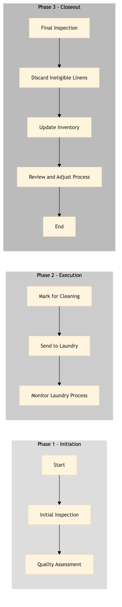

| Role | Steps |
|---|---|
| Housekeeping Staff | 1.1 1.2 3.1 3.2 3.3 |
| Laundry Manager | 1.2 2.1 2.2 2.3 3.4 |
| Step | Name | Role | System | Input | Output | KPI | Dec? | Exc? | Pain Point / Risk |
|---|---|---|---|---|---|---|---|---|---|
| 1.1 | Initial Inspection | Housekeeping Staff | Oracle OPERA Cloud | Returned linens from guests or daily inspection of linen inventory | Inspection report | Less than 5 minutes per item | Y | N | Time-consuming manual inspection process |
| 1.2 | Quality Assessment | Laundry Manager | Oracle OPERA Cloud | Inspection report | Quality assessment report | Less than 30 minutes per batch of linens | Y | N | Subjective quality judgment leading to inconsistencies |
| 2.1 | Mark for Cleaning | Laundry Manager | Oracle OPERA Cloud | Quality assessment report | Cleaning instructions | Less than 10 minutes per batch | N | N | Manual data entry for cleaning instructions |
| 2.2 | Send to Laundry | Laundry Manager | Oracle OPERA Cloud | Cleaning instructions | Linen batch sent to laundry | Less than 15 minutes per batch | N | Y | Delays in linen delivery to the laundry |
| 2.3 | Monitor Laundry Process | Laundry Manager | Oracle OPERA Cloud | Linen batch status updates | Cleaning progress report | Less than 5 minutes per update | N | Y | Inaccurate or delayed laundry status updates |
| 3.1 | Final Inspection | Housekeeping Staff | Oracle OPERA Cloud | Cleaned linens | Inspection report | Less than 5 minutes per item | Y | N | Need for consistent quality standards across inspections |
| 3.2 | Discard Ineligible Linens | Housekeeping Staff | Oracle OPERA Cloud | Inspection report | Discarded linens list | Less than 10 minutes per batch | N | Y | Proper disposal of discarded linens to avoid environmental impact |
| 3.3 | Update Inventory | Housekeeping Staff | Oracle OPERA Cloud | Discarded linens list | Updated linen inventory | Less than 15 minutes per batch | N | Y | Accurate tracking of linen inventory levels |
| 3.4 | Review and Adjust Process | Laundry Manager | Oracle OPERA Cloud | Final inspection reports | Process improvement plan | Less than 1 hour per week | N | Y | Continuous process optimization for efficiency and quality |
A structured process document for Linen Quality Control & Discard at a Marriott full-service hotel. This ensures that linens meet quality standards and are discarded properly to maintain guest satisfaction.